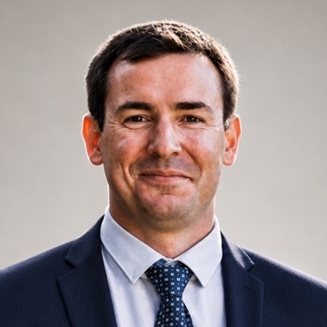

Independent Technical Leader | Product, Cloud & Infrastructure | AI-Augmented, Hands-On Delivery
Available for fractional and project-based engagements.
Get in touchI've spent most of my career inside other people's infrastructure. Data centres in London, enterprise networks across South Africa, and several years running product for an ad-tech platform generating R3M+ annually with full P&L ownership.
In that role, I cut cloud costs by 60% and grew revenue by 30% in the same period. Both results came from the same approach: staying close enough to the technical work to see what needed fixing, rather than managing it from a distance.
I now offer that same approach independently. For some clients that means stepping in as an interim Head of Product or Head of Infrastructure for a defined period. For others it means a fixed engagement, such as a cloud cost audit, a migration, or a stalled project that needs someone to take ownership and run it. I have no strong preference between the two models. My preference is for the problem to actually get solved.
I still write code and configure networks myself when that is the most effective route to a result. Twenty years spent across both strategy and hands-on delivery means I do not have to choose between them.
I use AI tools and agents as a first resort, not a last one. They speed up the parts of the work that used to take the most time, including research, drafting, infrastructure automation, and first-pass analysis. I still review the output myself, and I still do the work directly when a client needs someone in the room rather than a report. The combination is the point: AI-first tooling, with the judgment and hands-on delivery to know when to trust it and when to override it.
If you have a technical or operational problem that needs someone hands-on, or would simply value a second opinion from someone who has sat on both sides of the P&L, I would welcome the conversation.
Stepping in as Head of Product or Head of Infrastructure for a defined period, with full ownership of the role, not just advisory input.
Fixed-scope work including cloud cost audits, cloud migrations, infrastructure modernization, and technical project management for a specific initiative.
Advising on where AI tools genuinely speed up product, infrastructure, and operational work, and building that into engagements directly rather than treating it as a bolt-on.
Taking on fractional and interim leadership roles and fixed-scope engagements, including Head of Product and Head of Infrastructure work, cloud cost audits and migrations, and technical project management.
Owned P&L for an ad-tech platform generating R3M+ annually. Cut cloud infrastructure costs by 60% and grew platform revenue by 30%.
Led network engineering delivering enterprise connectivity solutions across South Africa.
Designed and deployed a Picture Archiving and Communication System network for radiology.
Progressed from data centre operations to network engineering, leading a team of 5+ operations professionals.
Available for fractional and project-based engagements. Get in touch to discuss what you need.
hermanusdejager@gmail.com